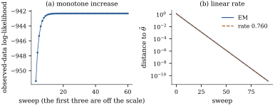

41.4 The EM algorithm
Maximizing the observed-data likelihood Eq. 41.3.2 directly means differentiating an integral. EM avoids that: it alternates between filling in the missing pieces of the complete-data log-likelihood and maximizing the filled-in version, and it never decreases the observed-data likelihood. The iteration of Theorem 18.6.1(c) — fill each lost plot with its fitted value, refit, repeat — is the oldest instance in this book.
41.4.1. The two steps
Let
Given a current value
the expectation being over
The E step is not “fill in the missing values”; it
fills in whatever functions of them the complete-data
log-likelihood contains. When
41.4.2. Monotonicity
Let
(a)
(b) if
(c) if
Proof. Write
(a) Subtract Eq. 41.4.2 at
(b) A nondecreasing sequence bounded above converges.
(c) At a fixed point,
Warning. Part (c) says fixed points are stationary points, not maxima: EM can converge to a saddle point or a local maximum, and with several modes the limit depends on the start. Wu (1983) gives conditions under which the limit points are stationary and under which the sequence converges; none rules out a local maximum. Start from several values.
41.4.3. Missing responses in a linear model
The oldest case is the one where every step is explicit, and it settles a question left open in Section 18.6.
Let
(a) the E step replaces each missing
(b) the M step is
(c) the unique fixed point is
which is the observed-data maximum likelihood estimate, based on
Proof.
(a) The complete-data log-likelihood
(b) With those substitutions,
(c) At a fixed point the completed vector has
The term
Fit the trend-plus-harmonics model of Section
5.3 to all
import numpy as np
import statsmodels.api as sm
co2 = sm.datasets.co2.load_pandas().data["co2"]
t = (co2.index.year + (co2.index.dayofyear - 0.5) / 365.25).to_numpy()
tc = t - 1980.0
X = np.column_stack([np.ones(len(t)), tc, tc**2,
np.cos(2 * np.pi * t), np.sin(2 * np.pi * t),
np.cos(4 * np.pi * t), np.sin(4 * np.pi * t)])
y = co2.to_numpy()
obs = ~np.isnan(y)
n, m, p = len(y), int((~obs).sum()), X.shape[1]
beta, sigma2 = np.zeros(p), 1.0 # any starting value will do
for sweep in range(60):
filled = np.where(obs, y, X @ beta) # E step: gaps get their fitted values
beta, *_ = np.linalg.lstsq(X, filled, rcond=None) # M step for the coefficients
sse = float(np.sum((filled - X @ beta) ** 2))
sigma2 = (sse + m * sigma2) / n # M step for the variance: add m*sigma^2
print(f"EM after {sweep + 1} sweeps: sigma-hat = {np.sqrt(sigma2):.4f} ppm")
beta_cc, *_ = np.linalg.lstsq(X[obs], y[obs], rcond=None)
sse_o = float(np.sum((y[obs] - X[obs] @ beta_cc) ** 2))
print(f"observed-data MLE: {np.sqrt(sse_o / (n - m)):.4f} ppm")
print(f"treating the fills as data: {np.sqrt(sse_o / n):.4f} ppm")41.4.4. A missing covariate
When a covariate is missing, the conditional distribution the E step needs runs backwards: what does a recorded response say about an unrecorded covariate? A model for the covariate is now unavoidable.
Let
both evaluated at
Proof. The pair
Note what the E step does not do: it does
not impute
Simulate
Figure 41.4.1
shows the two faces of the algorithm. The observed-data
log-likelihood climbs monotonically, as Theorem 41.4.1(a)
requires, and the distance to the fixed point falls by
the constant factor

rng = np.random.default_rng(4104)
N = 400
theta_true = dict(b0=1.0, b1=0.8, s2=1.0, mu=0.5, t2=1.0)
x = theta_true["mu"] + np.sqrt(theta_true["t2"]) * rng.normal(size=N)
y2 = theta_true["b0"] + theta_true["b1"] * x + np.sqrt(theta_true["s2"]) * rng.normal(size=N)
seen = rng.uniform(size=N) > 1 / (1 + np.exp(-(-0.4 + 2.0 * (y2 - y2.mean()))))
print(f"{N - seen.sum()} of {N} covariates missing, more often when y is large")
def estep(th, y, seen):
"""Conditional mean and second moment of the covariate given the response."""
b0, b1, s2, mu, t2 = th
vy = b1**2 * t2 + s2 # marginal variance of y
cond_mean = mu + (b1 * t2 / vy) * (y - b0 - b1 * mu)
cond_var = t2 - (b1 * t2) ** 2 / vy
ex = np.where(seen, x, cond_mean)
ex2 = np.where(seen, x**2, cond_mean**2 + cond_var)
return ex, ex2
def mstep(ex, ex2, y):
mu, n_ = ex.mean(), len(y)
t2 = ex2.mean() - mu**2
sxx = ex2.sum() - n_ * mu**2
sxy = (ex * y).sum() - n_ * mu * y.mean()
b1 = sxy / sxx
b0 = y.mean() - b1 * mu
s2 = ((y**2).sum() - 2 * b0 * y.sum() - 2 * b1 * (ex * y).sum()
+ n_ * b0**2 + 2 * b0 * b1 * ex.sum() + b1**2 * ex2.sum()) / n_
return np.array([b0, b1, s2, mu, t2])
def loglik(th, y, seen):
"""Observed-data log-likelihood: joint for complete rows, marginal for the rest."""
b0, b1, s2, mu, t2 = th
ll = -0.5 * np.sum(np.log(2 * np.pi * s2) + (y[seen] - b0 - b1 * x[seen]) ** 2 / s2)
ll += -0.5 * np.sum(np.log(2 * np.pi * t2) + (x[seen] - mu) ** 2 / t2)
vy = b1**2 * t2 + s2
ll += -0.5 * np.sum(np.log(2 * np.pi * vy) + (y[~seen] - b0 - b1 * mu) ** 2 / vy)
return ll
th = np.array([0.0, 0.0, 1.0, 0.0, 1.0])
path, iterates = [loglik(th, y2, seen)], [th]
for sweep in range(200):
ex, ex2 = estep(th, y2, seen)
th = mstep(ex, ex2, y2)
path.append(loglik(th, y2, seen))
iterates.append(th)
print("EM b0, b1 =", np.round(th[:2], 4))
cc = np.polyfit(x[seen], y2[seen], 1)[::-1] # complete cases only
print("complete cases:", np.round(cc, 4))41.4.5. Rate of convergence, and the standard errors EM does not give
Both the speed of EM and its principal defect come
from the same matrix. Define the complete-data
information
At any
Consequently
Proof. Differentiate the identity
Identity Eq. 41.4.5 is Louis’s formula (Louis, 1982); “observed = complete minus missing” is the missing-information principle of Orchard and Woodbury (1972). Two consequences:
The rate. Near a fixed point the EM
map is approximately linear with Jacobian
The standard errors. The matrix EM
manipulates is
Warning. The variance of an EM estimate is never the inverse of the matrix the M step inverts. If a routine reports standard errors after EM without saying how it got them, assume it has made this mistake.
41.4.6. Exercises
A. Check your understanding
The EM algorithm for the zero-inflated model of Section
37.5 treats the component label as the missing
datum. Identify
B. Practice
In Proposition 41.4.2,
suppose one carries out the iteration but omits
the term
Solution. The coefficient update
does not involve
Let the complete-data model be an exponential
dispersion family (Definition 34.1.1)
with sufficient statistic
Solution. The complete-data
log-likelihood is
C. Going deeper
Construct a two-component normal mixture with missing labels — the classical EM problem — for which the likelihood is unbounded, and show that EM started near a degenerate configuration drives one variance to zero while the likelihood increases at every step. Reconcile this with Theorem 41.4.1(b).